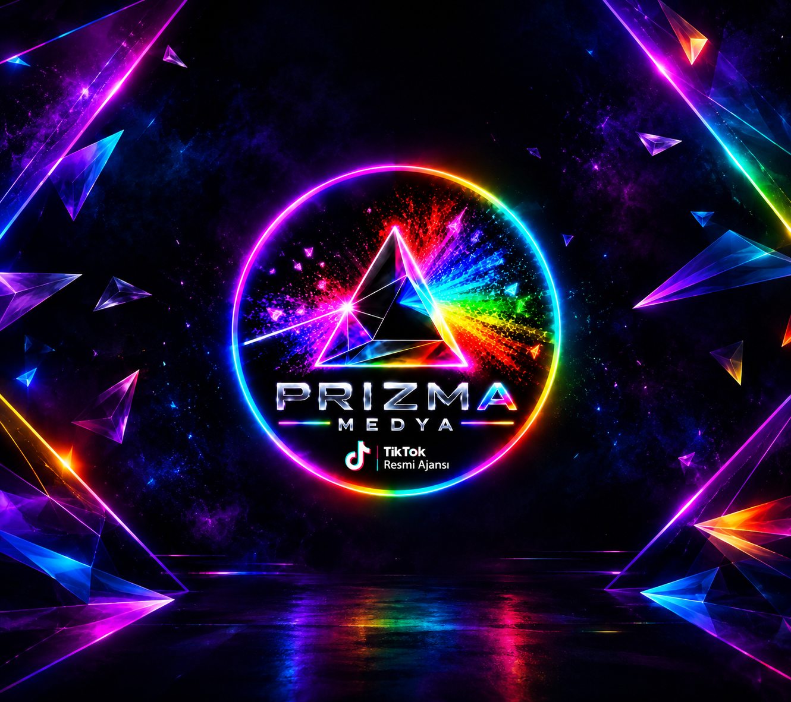
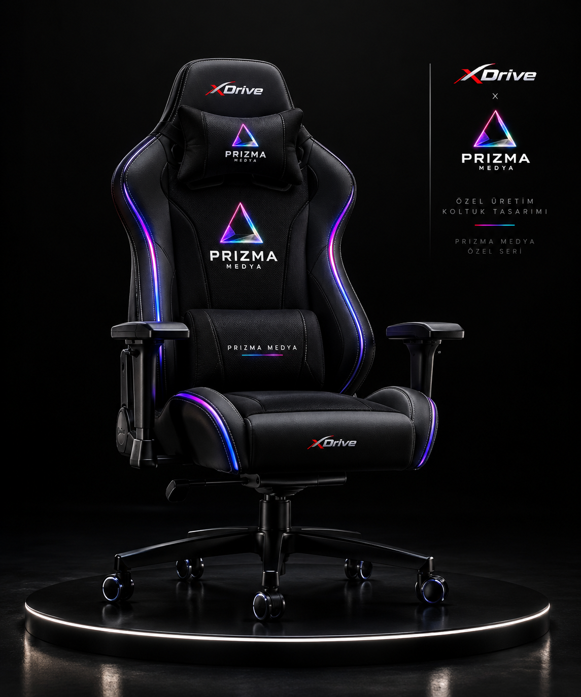

Yayıncı yönetimi
& büyüme planı
Hedeflerine ve yayın ritmine uygun, sana özel bir gelişim yol haritası.
↗.png) Ajansa başvur ↗
Ajansa başvur ↗
İçerik üreticileri ve canlı yayıncılar için strateji, gelişim ve profesyonel ajans desteği. Kendi yolunu, doğru destekle çiz.

Her yayıncının yolculuğu farklı. İhtiyacına kulak veriyor, hedeflerine uygun desteği birlikte şekillendiriyoruz.
Hedeflerine ve yayın ritmine uygun, sana özel bir gelişim yol haritası.
↗İçerik fikrinden yayın takvimine kadar sürdürülebilir bir üretim düzeni.
↗Yayın kalitesi, izleyici etkileşimi ve program yönetimi için birebir destek.
↗İçerik ve yayın verilerinden güçlü yönlerini ve fırsatları birlikte keşfedelim.
↗Birlikte üretmek ve paylaşmak için kampanya, etkinlik ve topluluk desteği.
↗Profiline uygun iş birliği fırsatları ve yayın ortamın için ekipman desteği.
↗
Uzun yayın saatleri için tasarlanan, Prizma Medya detaylarıyla kişiselleştirilmiş xDrive özel seri koltuk.
Tek tip çözümlere inanmıyoruz. Yayın tarzını, hedef kitleni ve hayallerini anlamakla başlıyoruz. Sonra birlikte, sana uyan yolu kuruyoruz.
Desteklerimizi keşfet ↓Kişiye özel yol haritası, şeffaf iletişim ve uzun vadeli gelişim.
Yayıncı gelişimini strateji, teknoloji ve günlük iletişimle destekleyen ekip.
Ajans vizyonu, teknik altyapı ve platform geliştirme süreçlerini yönetir; Prizma Medya’nın dijital deneyimini ileri taşır.
Yayıncı ilişkileri, strateji yönetimi ve canlı yayınlarda büyüme operasyonlarını koordine eder.
Ajans yayıncılarına 7/24 destek ve canlı yayın yönetimi sunan ekip.
Yayın sürecinde günlük koordinasyon ve canlı destek.
Yayıncı sorularına ve operasyon ihtiyaçlarına destek.
Canlı yayın akışı ve ekip içi takip koordinasyonu.
Yayıncı iletişimi ve günlük yayın desteği.
Canlı yayınlarda anlık destek ve operasyon takibi.
Yayınını ve hedeflerini kısaca anlat. Ekibimiz başvurunu değerlendirip seninle iletişime geçsin.